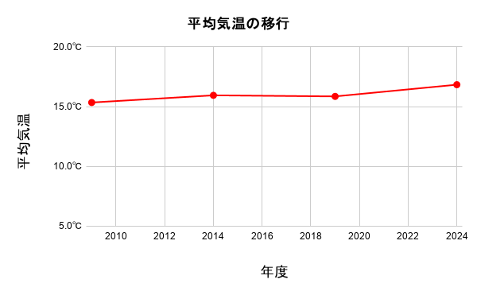
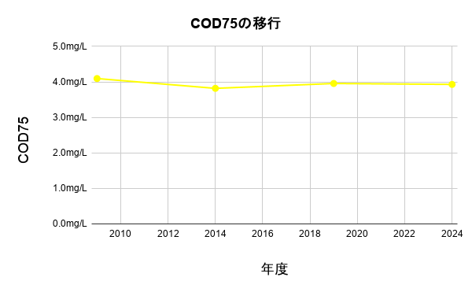
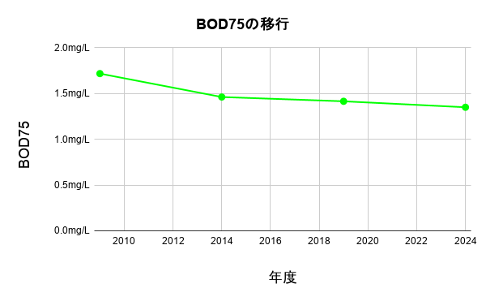
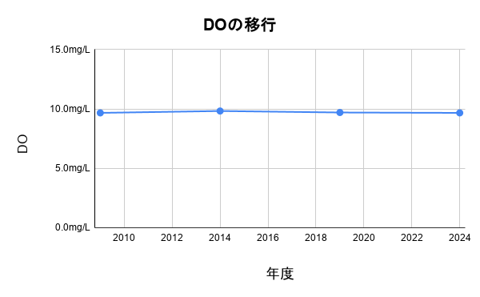
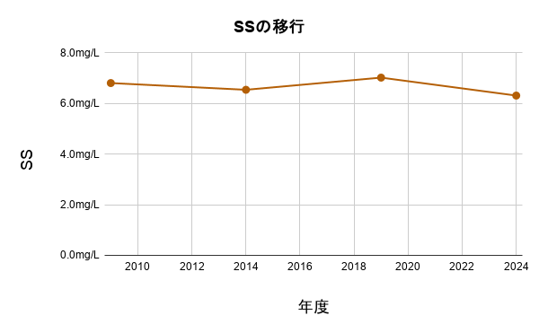

GIS MAP
マップ
このサイトでは、環境省が発表した公共用水域水質測定データを基に作成したGISを無料で公開しています。
地図の読み込みには時間がかかる場合があります。ご了承ください。
毎月31日に更新しています！(更新日が前後する場合があります。ご了承ください。)
読み込みが遅い場合は、ブラウザを更新するか地図をズームしてみてください。
ズームすればするほど表示されるデータ量が減るため、読み込みが速くなります。
2009年から2024年までのデータを5年周期で集めました。
出典は
こちらをご確認ください。





表示年度
年度を選択して水質データを比較できます。
おすすめの水辺スポットを教えてください！
お気に入りの場所やよく行く水辺の追加申請はこちらから受付けしています。
まだデータがありません。
このページから、調査データを送ってください。
毎月31日に更新しています。(更新日が前後する場合があります。ご了承ください。)
データについて
本マップは公開されている水質測定データをもとにした情報提供を目的としています。
データの詳細な出典・定義・測定方法については、データセットの原典をご確認ください。
地理データをダウンロード
クレジット・使用素材の権利（PDF）をダウンロード